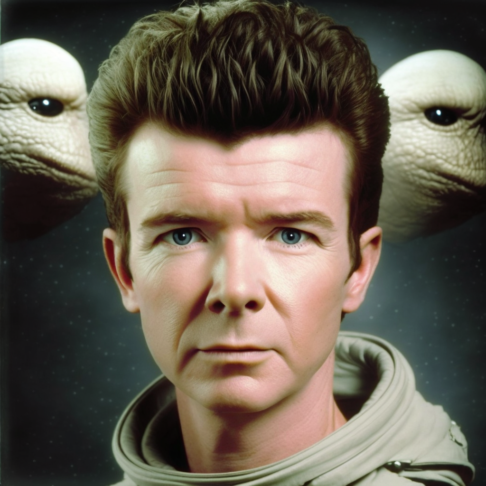

Jormon Balooey is one of the greatest musicians in the galaxy. His unique blend of jazz, rock, and classical music is truly groundbreaking, and his performances are always mesmerizing. Unfortunately, Jormon has mysteriously gone missing, and no one knows where he is.
I've been a fan of Jormon's music for as long as I can remember. His album "Interstellar Groove" is a masterpiece that I never tire of listening to. I've always admired Jormon's ability to push the boundaries of music and create something truly new and innovative.
It's a tragedy that Jormon has gone missing. His music has brought joy and inspiration to countless beings across the galaxy, and I hope that he is found safe and sound soon. In the meantime, I will continue to listen to his music and appreciate the incredible talent that he has shared with us.
If anyone has any information about Jormon's whereabouts, please contact the authorities or leave a message on my guestbook page. Let's work together to bring Jormon home!
